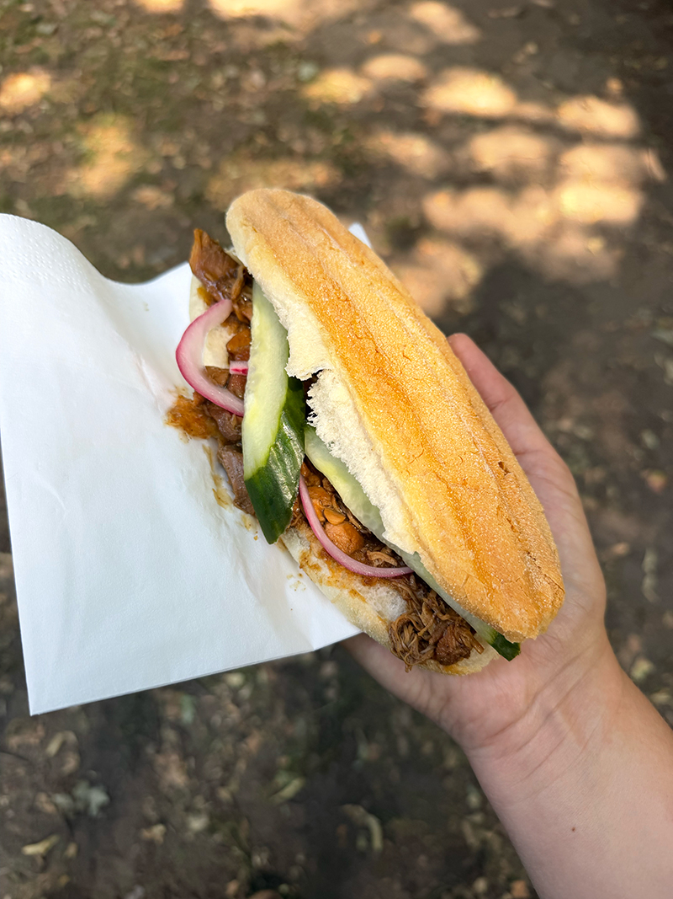
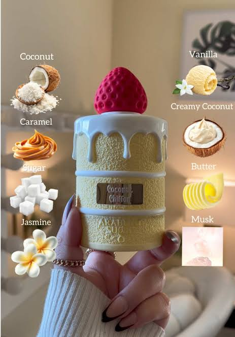
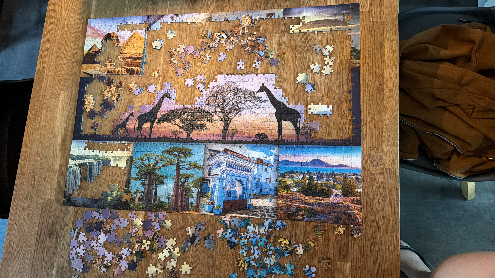
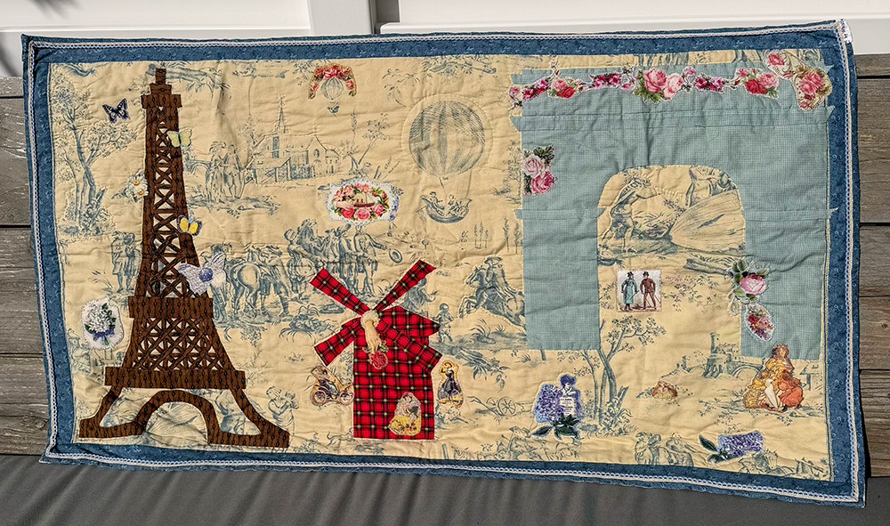
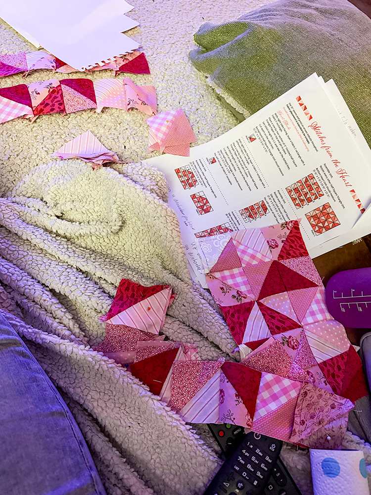
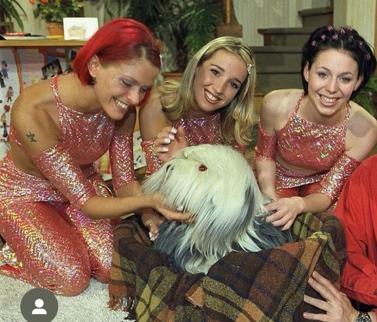
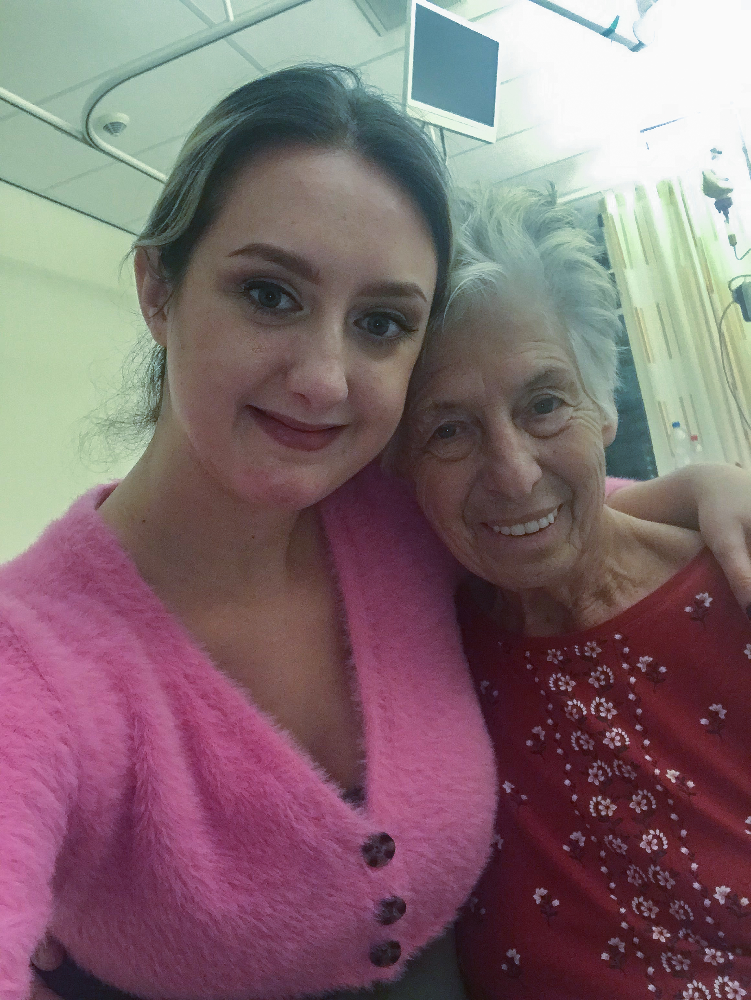
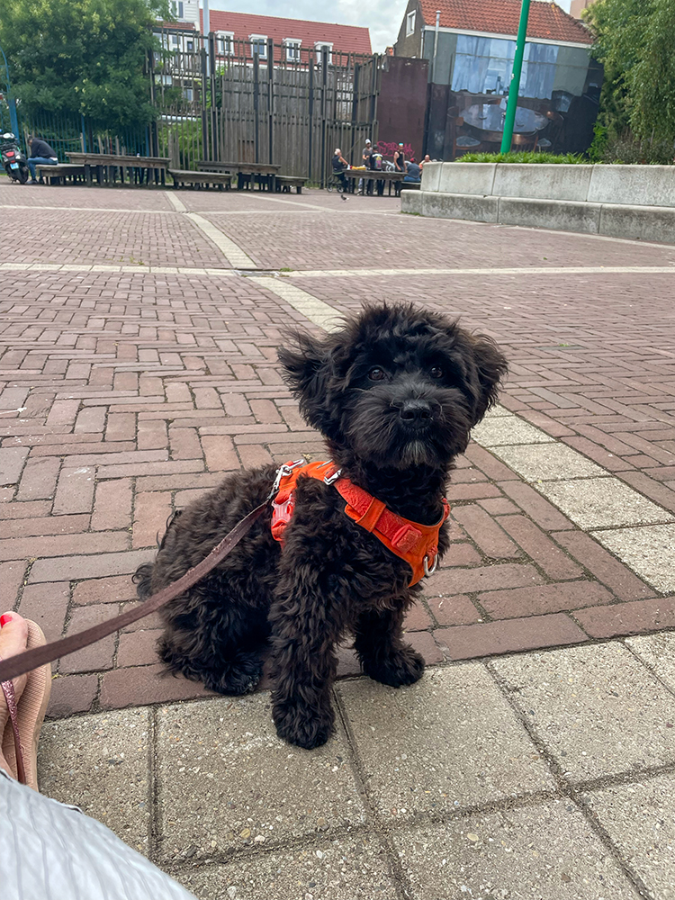
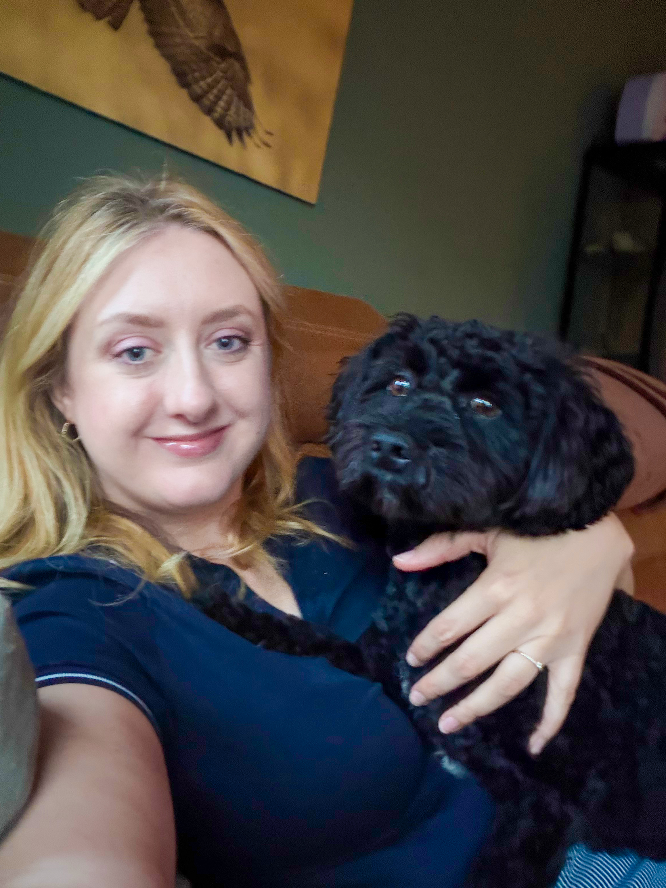

TOSCABLUE
Welkom op mijn persoonlijke website! Hier neem ik je mee in mijn wereld. Ontdek mijn creatieve hobby's, projecten waar ik met veel passie aan werk, en de belangrijkste herinneringen met mijn familie en huisdieren.
Mijn Hobby's & Passies






Familie & Huisdieren


